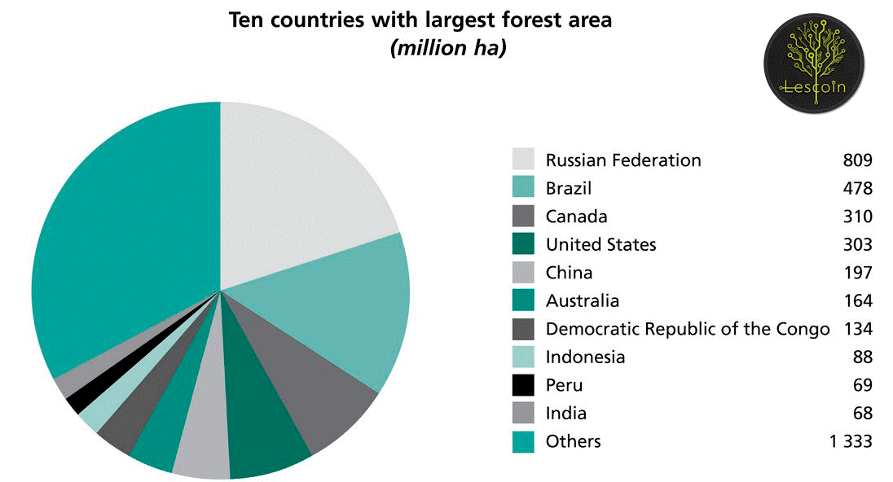
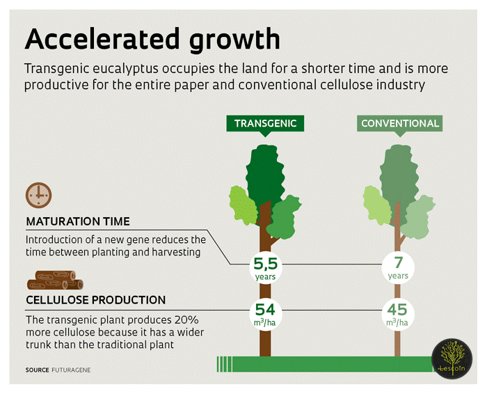

In early September, the Russian President’s Envoy in the Far East Yuriy Trutnev announced the initiative to create a government-certified crypto-exchange in the region. The Russian Central Bank has approved the project and the platform development is underway. According to Trutnev, the Far East is to become Russia’s free investment zone where crypto-trading will be legalized. The earlier speculations that the Crimea will receive such status were not confirmed by Russian officials.
The DAO Lescoin soon announced its huge development project in the Far East. The fund aims to raise investment for a diversified timber enterprise at the border with China. Will it be the first ICO on the government-backed platform? The negotiations are on the way. “There is the opinion that an independent exchange is more attractive for investors”, explained the project founder Ivan Gridin. “Our production is located in the Far East, and we do not have to release the token on the “official” exchange in order to pass under the free investment regulation. We decided to conduct the pre-ICO ahead of the schedule to get in contact with investors. We will go where the money goes”.
Russia’s timber industry is on the rise as the global demand for wood is growing. In 2016, China alone increased the wood import from Russia by 36%. The Russian government facilitated the trade development by reducing export duties. However, the industry suffers the capital deficit and wear of the industrial base. Russian companies strive to modernize the production.
Russia’s rich forest resources are concentrated in West Siberia and the Far East, known for their vast undeveloped territory. The lack of transport and wood-processing infrastructure there hinders the development of the industry. Suffering the economic sanctions, the Russian business has no easy access to foreign capital. The crypto-market becomes a new promising option.
“Naturally, we would prefer to sell end products to neighboring China and Japan, but we need large upfront investment to establish woodworking facilities in the Far East”, said Gridin. “Collective investment is a great opportunity for us, especially as the Russian regulators gave the green light for crypto-trading in the region. The ICO would help us to diversify production and introduce new bio-technology into our business model”.
Back in 2014, ‘Les-Invest’ created a pilot plantation of transgenic pines in West Siberia. By now, the trees has grown to 4-6 meters and proved the highest wood quality. “Our partners planted TG-pines on 5 hectares and the results are amazing! We even filmed the forest from the air to demonstrate its unique qualities”, explained Gridin. The bio-technology allows for reaching higher yields while preserving the wild forests. TG-trees are used for timber production in the U.S., China, Brazil and other countries. Russia has not yet implemented the technology for industrial use.
The further development again requires large investment. The seeds are imported from the U.S. and a technical park to plant TG-seedlings is yet to be purchased. All together, these factors pushed the Russian timbermen to look for investment in the crypto-market. “Our project is both innovative and profitable as the demand and wood prices are rising. We hope that our eco-friendly initiative will also attract attention. Unfortunately, the majority of Russian small-sized and medium enterprises cannot perform re-forestation after logging in the wild forests. DAO Lescoin wants to minimize the damage caused by the timber production”, concluded Gridin.
The DAO Lescoin conducts the Pre-ICO from September, 18 to October, 18. The company offers generous bonuses to early investors – up to 100% on the first week. All Lescoin tokens are secured by wood stock. 1 Lescoin (costs $50) guarantees the right to receive 1 cubic meter of wood or the profits from its processing and sale as sawn timber (costs approx. $200). Going even further, DAO Lescoin allows the wholesale buyers to pre-order wood and pay for it in crypto-currencies.
Find more information on the official website: lescoin.io